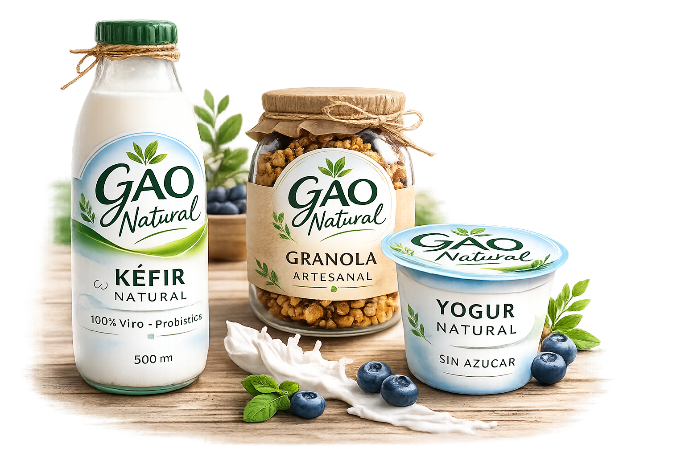
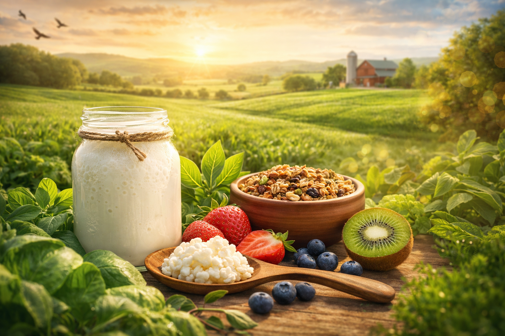

Bienvenidos a Gao Natural!!!
Somos una empresa comprometida con el bienestar, dedicada a la elaboración y comercialización de productos saludables y 100% naturales. Seleccionamos ingredientes de alta calidad, libres de químicos y conservantes artificiales, para ofrecer alternativas que nutren el cuerpo de manera consciente y responsable.
¿Que es el Kfir??
El kéfir es una bebida fermentada natural rica en probióticos vivos que ayudan a equilibrar la microbiota intestinal. Se diferencia por su proceso artesanal de fermentación, que potencia sus propiedades nutricionales y lo convierte en un verdadero superalimento. Gracias a su alto contenido de bacterias beneficiosas, vitaminas y minerales, el kéfir fortalece tu sistema digestivo y contribuye a tu bienestar integral.


¿Qué lo hace diferente?
A diferencia de otros productos fermentados, el kéfir contiene una mayor diversidad de microorganismos beneficiosos que trabajan en conjunto para mejorar la salud intestinal. Su proceso artesanal permite conservar sus propiedades vivas, ofreciendo un producto más completo y natural.
¿Por qué es un superalimento?
El kéfir es considerado un superalimento por su alto contenido de probióticos, vitaminas y minerales esenciales. Contribuye al equilibrio de la microbiota, fortalece el sistema inmunológico y promueve una mejor digestión, ayudando a mantener un bienestar integral de manera natural.

Beneficios
• Restaura la microbiota intestinal.
• Mejora la digestión.
• Refuerza el sistema inmune.
• Reduce inflamación.
• Mejora absorción de nutrientes.
•Fortalece huesos.
• Regula glucosa y colesterol.
• Beneficia la salud mental.
• Mejora la piel.
• Es bajo en lactosa y fácil de digerir.


¿Por que elegir Gao Natural?
#1
🌿 Ingredientes 100% naturales
En GAO Natural seleccionamos cuidadosamente cada ingrediente para garantizar pureza, frescura y calidad. Nuestro kéfir está elaborado sin aditivos artificiales, priorizando materias primas naturales que respetan el equilibrio del cuerpo y potencian sus beneficios probióticos de forma auténtica.
#2
🥣 Proceso artesanal
Creemos en la tradición y el cuidado en cada etapa de producción. Nuestro proceso artesanal permite conservar las propiedades vivas del kéfir, asegurando un producto fresco, auténtico y elaborado con dedicación, sin procesos industriales que alteren su esencia natural.
#3
🚫 Sin conservantes
Nuestros productos no contienen conservantes artificiales ni químicos añadidos. Apostamos por la frescura real y por un alimento vivo que mantiene sus beneficios gracias a un manejo responsable y a una producción cuidadosa, priorizando siempre tu salud.
#4
💚 Compromiso con tu bienestar
Nuestra misión va más allá de ofrecer un producto: buscamos promover un estilo de vida saludable y consciente. Trabajamos cada día con responsabilidad y pasión para que puedas cuidar tu salud desde adentro, de manera natural y sostenible.
Testimonios
Nuestro Compromiso
🌿
Calidad
Garantizamos productos elaborados con altos estándares, cuidando cada detalle para ofrecer frescura y excelencia.
♻️
Sostenibilidad
Promovemos prácticas responsables que respetan el medio ambiente y fomentan un consumo consciente.
🤝
Producción Responsable
Nuestro proceso es cuidadoso y controlado, asegurando seguridad, higiene y compromiso real.
💚
Amor por lo Natural
Creemos en la pureza de los ingredientes naturales y en el poder de lo simple para transformar tu bienestar.
Empieza tu transformación natural hoy
Dale a tu cuerpo el cuidado que merece. Descubre los beneficios del kéfir y comienza un estilo de vida más saludable y consciente.